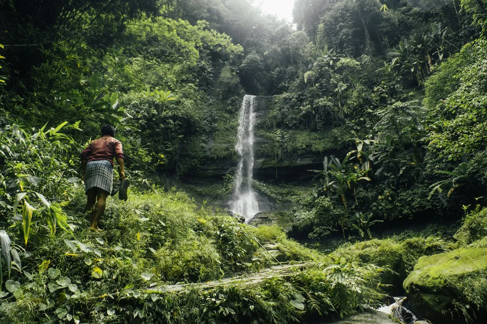

Region · Mountain country
Chittagong Hill Tracts
Bangladesh's mountain country — reservoir lakes, cloud-level ridgelines, and a mosaic of Indigenous cultures unlike anywhere else in the country.

This is the wildest, least-visited corner covered here, and the most rewarding for travellers who want ridgelines and hill communities over cities and beaches. It's reached via Chittagong, then up by road to Bandarban, Rangamati or Khagrachari.
Access and permits change — check before you go. Parts of the Hill Tracts require permits and a local guide, and some areas may be restricted to foreign visitors depending on the current situation. Confirm the latest rules with a reputable local operator, and check your government's travel advice, before committing to this region.
What to do
- Kaptai Lake. A long, quiet day on the reservoir around Rangamati, hopping islands and hanging bridges.
- Nilgiri & Chimbuk ridgeline. The high road above Bandarban, with cloud-level viewpoints and hill villages.
- Golden Temple & markets. The Buddhist temple above Bandarban and the weekly markets where hill communities trade.
How long to plan
Three days is a sensible minimum given the travel time up and back; more if you want to combine Bandarban's ridgelines with Rangamati's lake.
Getting there
Via Chittagong, which you reach from Dhaka by train, bus or a short flight. It pairs well with a Cox's Bazar beach leg for a mountains-and-sea loop through the southeast.
Fixed price, meet you at arrivals

Price a Hill Tracts trip
Opens the planner with Dhaka + the hills.
Storing bags in Dhaka or Chittagong while you head into the hills? Radical Storage has city-centre drop-off points from a few dollars a day.